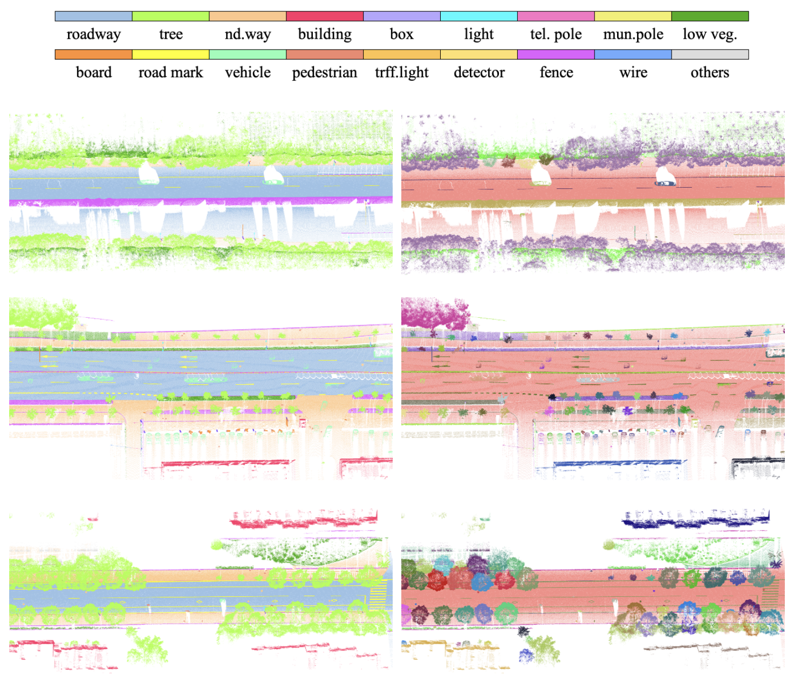

Research Projects
Benchmark Dataset

WHU-Road3D:
Xiaoxin Mi*，Zhen Cao, Zhen Dong†, Bisheng Yang
ISPRS J (IF: 12.7)
[Paper]
[Dataset]
Industry Applications
If you are interested in cooperation - contact us on sales@dynspai.com.
- 道路设施交互式提取(Interactive extraction of road facilities)
- 道路场景三维模型重建(3D reconstruction of road scene)